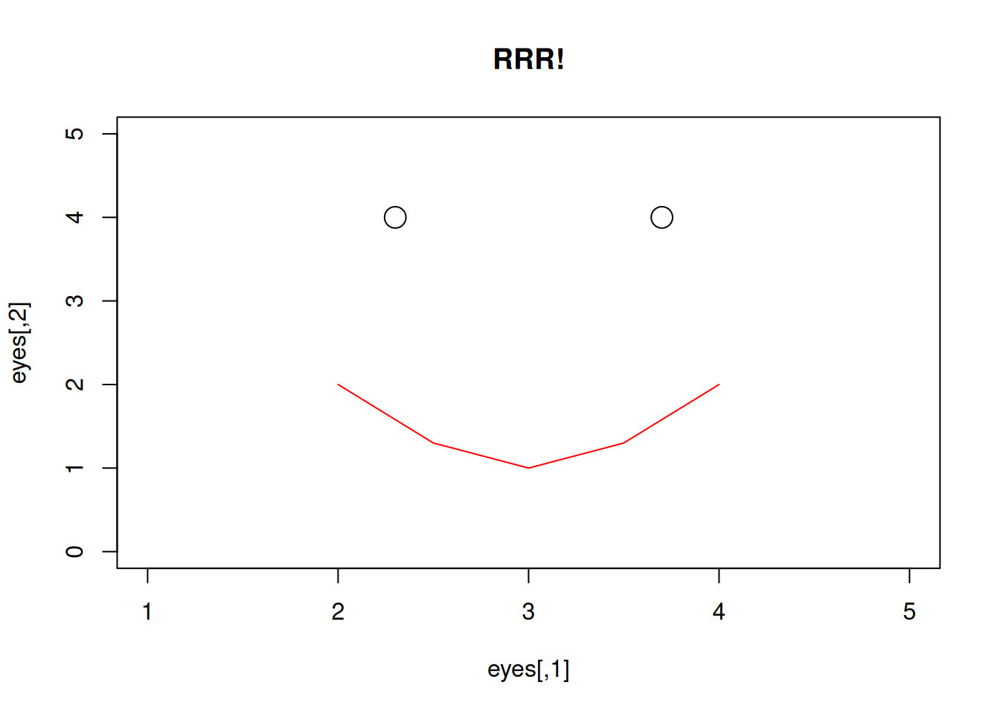

knitr::include_graphics("figures/console.png")
Enter at this point will trigger the autocompletion of the command `install.packages(“stats19”).
Learning a programming language is like learning any language. If you’re learning French, for example, you could just dive in and start gesticulating to people in central Paris. However, it’s worth taking the time to understand the structure and key words of the language first. The same applies to data science: it will help if you first understand a little about the syntax and grammar of the language that we will use to in relation to the ‘data’ (the statistical programming language R) before diving into using it for road safety research. This section, parts of which were originally developed for a 2-day course on data science, may seem tedious for people who just want to crack on and load-in data. However, working through the examples below is recommended for most people unless you’re already an experienced R user, although even experienced R users may learn something about the language’s syntax and fundamental features.
The first step is to start RStudio, e.g. if you are on Windows, this can be achieved by tapping Start and searching for RStudio. You should see an R console pane like that which is displayed in Figure 2.1.
knitr::include_graphics("figures/console.png")Enter at this point will trigger the autocompletion of the command `install.packages(“stats19”).
If you saw something like that which is shown in Figure 2.1 congratulations! You are ready to start running R code by entering commands into the console.
R can be understood as a giant calculator. If you feed the console arithmetic tasks, it will solve them precisely and instantly. Try typing the following examples (note that pi is an inbuilt object) into the R console in RStudio and pressing Enter to make R run the code. (Note: The output of the code, when shown in this manual, is preceded by ‘##’.)
2 + 19[1] 21pi^(19 + 2) / exp(2 + 19) [1] 20.89119Use the same approach to find the square route of 361 (answer not shown):
sqrt(361)This is all well and good, providing a chance to see how R works with numbers and to get some practice with typing commands into the console. However, the code chunks above do not make use of a key benefit of R: it is object-oriented, meaning it stores values and complex objects, such as data frames representing road casualties, and processes them in memory (meaning that R is both fast and memory hungry when working with large datasets). If you are more familiar with Excel, a data frame may be thought of as fulfilling the purpose of a single worksheet containing a set of data.
The two most common ways of creating objects are using <- ‘arrow’ or = ‘equals’ assignment. These symbols are assignment operators because they assign contents, such as numbers, to named objects. We advocate using snake_case, a style that avoids upper case characters to ease typing and uses the underscore symbol (_) to clearly demarcate spaces between words.
The objects created in the previous code chunk have now served their purpose, which is to demonstrate basic object creation in R. So, based on the wise saying that tidying up is the most important part of a job, we will now remove these objects:
x = 2
y = 19
z = x + y
pi^z / exp(z)[1] 20.89119rm(x, y, z)What just happened? We removed the objects using the R function rm(), which stands for ‘remove’. A function is an instruction or set of instructions for R to do something with what we give to that function. What we give to the function are known as arguments. Each function has set of arguments we can potentially give to it.
Technically speaking, we passed the objects to arguments in the rm() function call. In plain English, things that go inside the curved brackets that follow a function name are the arguments. The rm() function removes the objects that it is passed (most functions modify objects). A ‘nuclear option’ for cleaning your workspace is to run the following command, the meaning of which you will learn in the next section. (Can you guess?)
rm(list = ls())Next exercise: create objects that more closely approximate road casualty data by typing and running the following lines of code in the console:
casualty_type = c("pedestrian", "cyclist", "cat")
casualty_age = seq(from = 20, to = 60, by = 20)The final stage in the previous section involved creating two objects with sensible names in our R session. After running the previous code chunk the casualty_* objects are in the workspace (technically, the ‘global environment’). You should be able to see the object names in the Environment tab in the top right of RStudio. Objects can also be listed with the ls() command as follows:
ls()[1] "casualty_age" "casualty_type"The previous command executed the function ls() with no arguments. This helps explain the command rm(list = ls()), which removed all objects in the global environment in the previous section. This also makes the wider point that functions can accept arguments (in this case the list argument of the rm() function) that are themselves function calls.
Two key functions for getting the measure of R objects are class() and length().
class(casualty_type)[1] "character"class(casualty_age)[1] "numeric"The class of the casualty_type and casualty_age objects are character (meaning text) and numeric (meaning numbers), respectively. The objects are vectors, a sequence of values of the same type. Next challenge: guess their length and check your guess was correct by running the following commands (results not shown):
length(casualty_type)
length(casualty_age)To convert a series of vectors into a data frame with rows and columns (similar to an Excel worksheet), we will use the data.frame() function. Create a data frame containing the two casualty vectors as follows:
crashes = data.frame(casualty_type, casualty_age)We can see the contents of the new crashes object by entering the following line of code. This prints its contents (results not shown, you need to run the command on your own computer to see the result):
crashesWe can get a handle of data frame objects such as crashes as follows:
class(crashes)[1] "data.frame"nrow(crashes)[1] 3ncol(crashes)[1] 2The results of the previous commands tell us that the dataset has 3 rows and 2 columns. We will use larger datasets (with thousands of rows and tens of columns) in later sections, but for now it’s good to ‘start small’ to understand the basics of R.
As we saw above, the most basic type of R object is a vector, which is a sequence of values of the same type such as the numbers in the object casualty_age. In the earlier examples, x, y and z were all numeric vectors with a length of 1; casualty_type is a character vector (because it contains letters that cannot be added) of length 3; and casualty_age is a numeric vector of length 3.
Subsetting means ‘extracting’ only part of a vector or other object, so that only the parts of most interest are returned to us. Subsets of vectors can be returned by providing numbers representing the positions (index) of the elements within the vector (e.g. ‘2’ representing selection of the 2nd element) or with logical (TRUE or FALSE) values associated with the element. These methods are demonstrated below, to return the 2nd element of the casualty_age object is returned:
casualty_age[1] 20 40 60casualty_age[2][1] 40casualty_age[c(FALSE, TRUE, FALSE)][1] 40Two dimensional objects such as matrices and data frames can be subset by rows and columns. Subsetting in base R is achieved by using square brackets [] after the name of an object. To practice subsetting, run the following commands to index and column name and verify that you get the same results to those that are shown below.
casualty_age[2:3] # second and third casualty_age
crashes[c(1, 2), ] # first and second row of crashes
crashes[c(1, 2), 1] # first and second row of crashes, first column
crashes$casualty_type # returns just one columnThe final command used the dollar symbol ($) to subset a column. We can use the same symbol to create a new column as follows:
vehicle_type = c("car", "bus", "tank")
crashes$vehicle_type = vehicle_type
ncol(crashes)[1] 3Notice that the dataset now has three columns after we added one to the right of the previous one. Note also that this would involve copying and pasting cells in Excel, but in R it is instant and happens as fast as you can type the command. To confirm that what we think has happened has indeed happened, print out the object again to see its contents:
crashes casualty_type casualty_age vehicle_type
1 pedestrian 20 car
2 cyclist 40 bus
3 cat 60 tankIn Chapter 5 we will use filter() and select() functions to subset rows and columns. Before we get there, it is worth practicing subsetting using the square brackets to consolidate your understanding of how base R works with vector objects such as vehicle_type and data frames such as crashes. If you can answer the following questions, congratulations, you are ready to move on. If not, it’s worth doing some extra reading and practice on the topic of subsetting in base R.
Exercises
$ operator to print the vehicle_type column of crashes.[,] syntax so that only the first and third columns of crashes are returned.crashes dataset.crashes dataset.class() of the objects created by each of the previous exercises?It is also possible to subset objects by the values of their elements. This works because the [ operator accepts logical vectors returned by queries such as ‘Is it less than 3?’ (x < 3 in R) and ‘Was it light?’ (crashes$dark == FALSE), as demonstrated below:
x[c(TRUE, FALSE, TRUE, FALSE, TRUE)] # 1st, 3rd, and 5th element in x
x[x == 5] # only when x == 5 (notice the use of double equals)
x[x < 3] # less than 3
x[x < 3] = 0 # assign specific elements
casualty_age[casualty_age %% 6 == 0] # just the ages that are a multiple of 6
crashes[crashes$dark == FALSE, ] # just crashes that occurred when it wasn't darkExercises
casualty_age object using the inequality (<) so that only elements less than 50 are returned.crashes data frame so that only tanks are returned using the == operator.R objects can have a value of NA. NA is how R represents missing data.
z = c(4, 5, NA, 7)NA values are common in real-world data but can cause trouble. For example:
sum(z) # result is NASome functions can be told to ignore NA values.
sum(z, na.rm = TRUE) # result is equal to 4 + 5 + 7You can find NAs using the is.na() function, and then remove them:
is.na(z)
z_no_na = z[!is.na(z)] # note the use of the not operator !
sum(z_no_na)If you remove records with NAs, be warned: the average of a value excluding NAs may not be representative.
Sometimes you may want to change the class of an object. This is called class coercion, and can be done with functions such as as.logical(), as.numeric() and as.matrix().
Exercises
vehicle_type column of crashes to the class character.crashes object into a matrix. What happened to the values?summary() on character and factor variables?Often it is useful to ‘recode’ values. In the raw {STATS19} files, for example, -1 means NA. There are many ways to recode values in R, the simplest and most mature of which is the use of ‘factors’, which are whole numbers representing characters. Factors are commonly used to manage categorical variables such as sex, ethnicity or, in road traffic research, vehicle type or casualty injury severity.
z = c(1, 2, -1, 1, 3)
l = c(NA, "a", "b", "c") # labels in ascending order
z_factor = factor(z, labels = l) # factor z using labels l
z_character = as.character(z_factor) # convert factors to characters
z_character[1] "a" "b" NA "a" "c"Exercises
z to Slight, Serious and Fatal for 1:3 respectively.?dplyr::case_when and try to recode the values using this function.You can also save individual R objects as .Rds files. The .Rds format is the data format for R, meaning that any R object can be saved as an Rds file, equivalent to saving an Excel spreadsheet as a .xlsx file. The following command saves the crashes dataset into a compressed file called crashes.Rds:
saveRDS(crashes, "crashes.Rds")Try reading in the data just saved, and checking that the new object is the same as crashes, as follows:
crashes2 = readRDS("crashes.Rds")
identical(crashes, crashes2)[1] TRUER also supports many other formats, including CSV files, which can be created and imported with the functions {readr}::read_csv() and {readr}::write_csv() (see also the {readr} package).
{readr}::write_csv(crashes, "crashes.csv") # uses the write_csv function from the readr package
crashes3 = {readr}::read_csv("crashes.csv")
identical(crashes3, crashes) Notice that crashes3 and crashes are not identical. What has changed? Hint: read the help page associated with ?{readr}::write_csv.
Bonus: reproduce the following plot by typing the following code into the console.
eyes = c(2.3, 4, 3.7, 4)
eyes = matrix(eyes, ncol = 2, byrow = T)
mouth = c(2, 2, 2.5, 1.3, 3, 1, 3.5, 1.3, 4, 2)
mouth = matrix(mouth, ncol = 2, byrow = T)
plot(eyes, type = "p", main = "RRR!", cex = 2, xlim = c(1, 5), ylim = c(0, 5))
lines(mouth, type = "l", col = "red")